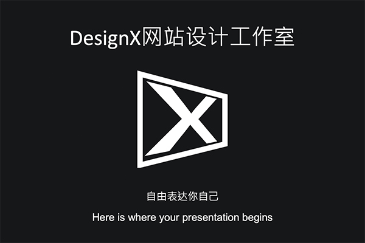
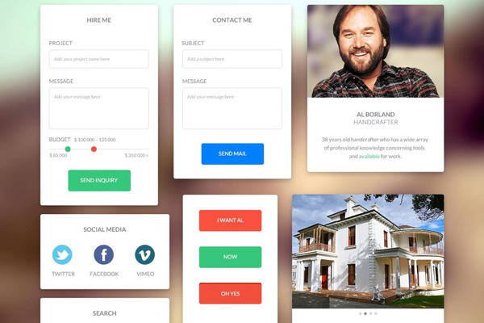

我们热爱开源，We love Open Source！
我们都是开源项目的受益者，感谢开源，成就了更好的我们。现在，我们以同样优秀的作品回馈开源社区。
DesignX现已开源！
集6位工程师的辛勤汗水的「DesignX网站设计工作室项目」现已开源！我们热爱开源，We love Open Source！
我们都是开源项目的受益者，感谢开源，成就了更好的我们。现在，我们以同样优秀的作品回馈开源社区。

设计你的电子个人简历
个人简历在求职的过程中起到“敲门砖”的作用。而一份容易引起HR注意力的简历，会让你受到关注的几率大幅度上升。想拥有更炫酷的个人简历吗？不妨进来学习一下吧！
Google Material Design在实际网页中的应用
谷歌表示，Material Design旨在为手机、平板电脑、台式机和“其他平台”提供更一致、更广泛的“外观和感觉”。但我们发现其不仅仅能应用于终端程序，在网页设计中它也有着出色的表现......
